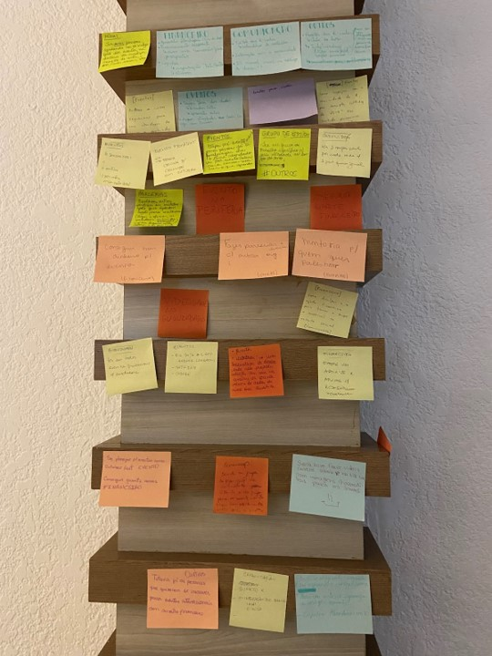

Este post foi escrito por Bruna Garbes, integrante da comunidade R-Ladies São Paulo! Bruna é formada em Ciência e Tecnologia pela Universidade Federal do ABC (UFABC) e possui mestrado em Bioinformática pelo Instituto de Matemática e Estatística da USP (IME-USP). Atualmente é cientista de dados no Hospital Israelita Albert Einstein onde trabalha como modelos de inteligência artificial baseados em aprendizado profundo para a interpretação de imagens médicas.
Planejando o 2024 da R-Ladies SP
O ano aqui nas R-Ladies São Paulo já começou com tudo! No primeiro fim de semana de janeiro tivemos nossa reunião de planejamento das atividades que queremos oferecer agora em 2024. Como já é de praxe nos nossos encontros, fizemos um cafezinho colaborativo e passamos post-its para as pessoas participantes colocarem as suas ideias de temas e assuntos que elas julgassem interessante de trazer para a roda. Montamos um painel de propostas bem bonito que deu um orgulho danado de se ver!

Tivemos quatro 4 grandes temas comentados na reunião: tipos e formatos de eventos, formas de financiamento da comunidade, manutenção do nosso famoso gugudadados e, por fim, a organização das nossas mídias e comunicação.
As ideias foram bastante numerosas e é difícil trazer todas neste post aqui, mas um dos temas que vale a pena comentar, porque ele define a execução de várias iniciativas que queremos manter e, quem sabe até expandir, é a criação de estratégias de financiamento do nosso grupo.
Formas de financiamento da comunidade
Ano passado tivemos a alegria de sermos contempladas por um financiamento do R Consortium, um grupo organizado sob um modelo de governança e fundação de código aberto (open source) para apoiar a comunidade mundial de usuários, mantenedores e desenvolvedores de software R.
Esse grant nos permitiu o pagamento do domínio do nosso site e o oferecimento de auxílios de transporte e de alimentação para pessoas com menos recursos, a fim de garantir a participação dessas pessoas nos nossos encontros presenciais.
Além disso, também foi com este recurso que garantimos o pagamento da equipe do espaço Gugudadados, uma área reservada às crianças e com a presença de uma cuidadora para auxiliar na monitoria dos pequenos, enquanto as mães participam das atividades com R. É interessante comentar que essa iniciativa atraiu os olhares de outras comunidades que vieram nos perguntar como conseguimos conduzir essa iniciativa. Futuramente teremos post exclusivo sobre o tema, pois como disse a nossa querida Beatriz Milz no encontro:
“Se você explicar alguma coisa ou ideia para mais de duas pessoas, este tema merece um post nas redes!”
Para garantir a continuidade dessas iniciativas pensamos, para além de continuar a nos candidatar a esses pedidos de grants, também iniciar campanhas de financiamento como apoia-se, promover a ideia de filantropia com eventos nas redes com campanhas do tipo “dia do pix” e até mesmo com a venda de produtos personalizados, como canecas e camisetas.
Enfim, vocês irão nos ver e ouvir falar sobre este tema ainda muito mais, pois ele é fundamental para gente alcançar os grupos minorizados que a gente conseguiu e quer continuar alcançando.
Eventos
Falando sobre os eventos que queremos para 2024, discutimos bastante a ideia de propormos cursos e meetups mais sequenciais, com temas mais relacionados entre si para podermos justamente aprofundar os conceitos e ir al√©m da introdu√ß√£o. Junto a isso, tamb√©m comentamos a ideia de promover eventos tanto nos formatos presenciais quanto online de forma alternada para garantir o melhor dos dois mundos. A gente sabe que essas defini√ß√µes dependem bastante dos espa√ßos e das palestrantes que conseguirmos, mas do nosso lado já come√ßamos a desenhar uma programa√ß√£o e em breve devemos divulgar por aqui. A dica √©: fiquem de olho nas nossas redes! ü§£
Redes sociais
Por falar em redes, devemos nos movimentar mais nelas em 2024. Dividimos as pessoas conforme suas afinidades por redes. Eu, Bruna, que vos falo neste momento, ficarei na turma do insta. Ainda temos vagas para as tik tokers, quem topa? üòÅ
Metas para 2024
Para encerrar este post de metas para 2024 e vocês não ficarem se perguntando “ué, mas cadê as metas desta comunidade?”, aqui vai as metas (e resultados-chave, meus amores) das R-Ladies SP para este ano:
- Objetivo 1: Fazer mais eventos
- Resultados-chave: Em 2024, queremos fazer 6 encontros presenciais e 6 encontros online.
- Objetivo 2: Movimentar mais as redes sociais
- Resultados-chave: Em 2024, queremos fazer um post nas redes sociais a cada 15 dias.
- Objetivo 3: Recursos financeiros
- Resultados-chave: Garantir o valor de R$ 500 reais para cada evento presencial (valor médio que estimamos ser adequado para executar um evento nosso). Garantir o valor para pagamento anual de contas extras de serviço, como domínio de site e serviços como o Canvas para o time de comunicação do grupo.
Fala se essa comunidade não é organizada? Não sou virginiana, mas adorei!
Feliz 2024!üòò